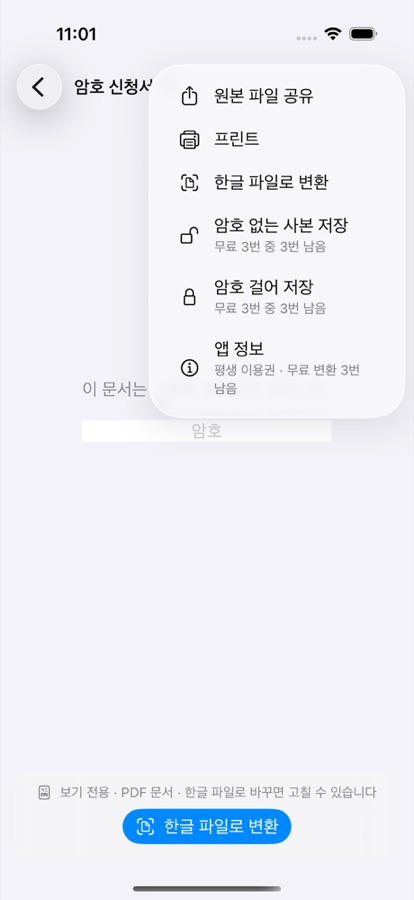
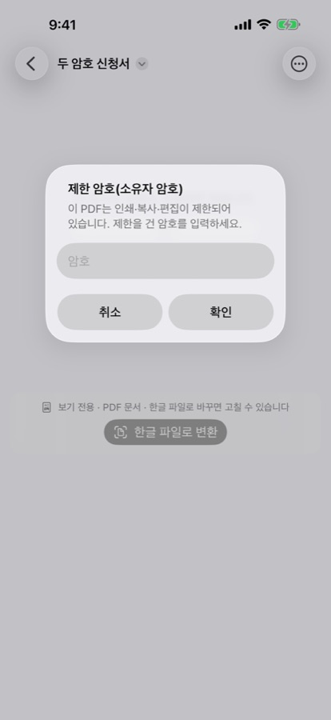

아이폰에서 PDF 암호 풀기·걸기
HWP 뷰어를 만드는 개발자 ongsim이 직접 쓴 안내입니다.
iPhone·iPad용 HWP 뷰어 1.3.0이 2026년 10월 27일(한국 시간) 공개되었습니다. 이 버전부터 PDF 암호를 풀거나 걸 수 있습니다. PDF를 연 뒤 오른쪽 위 '더 보기'(⋯) 메뉴에서 씁니다.
이럴 때 씁니다
- 회사·학교·관공서에서 받은 암호 PDF(급여명세서, 성적표 등)를 매번 암호를 넣지 않고 보관하고 싶을 때
- 개인정보가 든 신청서 PDF를 보내기 전에 암호를 걸고 싶을 때
아이폰·아이패드. 기기 안에서만 처리하고 문서와 암호를 서버로 보내지 않습니다.
순서
암호 풀기: 암호 없는 사본 저장
- 암호가 걸린 PDF를 엽니다.
- 오른쪽 위 '더 보기'(⋯)를 누릅니다.
- '암호 없는 사본 저장'을 고릅니다. 이 항목은 암호가 걸린 PDF에서만 보입니다.
- PDF를 열 때 쓰는 암호를 넣습니다.
- 인쇄·복사·편집이 제한된 PDF라면 제한 암호(소유자 암호)를 한 번 더 넣습니다.
- 공유 시트에서 '파일에 저장'을 고르거나 카카오톡·메일로 보냅니다.
원본 PDF는 그대로 남습니다.
암호 걸기: 암호 걸어 저장
- PDF를 엽니다.
- 오른쪽 위 '더 보기'(⋯)를 누릅니다.
- '암호 걸어 저장'을 고릅니다. 이 항목은 모든 PDF에서 보입니다.
- 새 암호를 두 번 넣습니다. 영문·숫자·기호만 쓸 수 있습니다.
- 공유 시트에서 '파일에 저장'을 고르거나 카카오톡·메일로 보냅니다.
화면


알아 둘 것
- 모르는 암호는 풀 수 없습니다. 암호를 맞히거나 우회하는 기능은 없습니다.
- 인쇄·복사·편집이 제한된 PDF는 제한을 건 암호(소유자 암호)를 한 번 더 묻습니다. 그 암호 없이는 사본을 만들지 않습니다.
- 새 암호에는 한글을 쓸 수 없습니다. 한글로 건 암호는 나중에 다시 열지 못하는 경우가 있어 영문·숫자·기호만 받습니다.
- 암호는 저장하지 않습니다. 묻는 동안에만 쓰고, 임시 사본은 공유·저장이 끝나거나 취소하면 지웁니다. 기기 안에서 처리하며 서버로 보내지 않습니다.
무료로 쓸 수 있는 범위
- 암호 걸린 PDF를 열어 보고 인쇄하는 것은 무료입니다.
- '암호 없는 사본 저장'과 '암호 걸어 저장'은 합쳐서 3번까지 무료입니다. 남은 횟수는 메뉴에 '무료 3번 중 N번 남음'으로 표시됩니다.
- 이 횟수는 양식 저장·변환 횟수와 따로 셉니다.
- 그 뒤에는 평생 이용권으로 계속 쓸 수 있습니다. 한 번 구매하며 구독이 아닙니다.
자주 묻는 질문
모르는 암호도 풀 수 있나요?
아니요. 암호를 맞히거나 우회하는 기능은 없습니다. PDF를 열 때 쓰는 암호를 알고 있어야 암호 없는 사본을 만들 수 있습니다.
인쇄가 막힌 PDF는 어떻게 되나요?
인쇄·복사·편집이 제한된 PDF는 제한을 건 암호(소유자 암호)를 한 번 더 묻습니다. 그 암호 없이는 사본을 만들지 않습니다.
암호가 저장되나요?
저장하지 않습니다. 암호는 묻는 동안에만 쓰고, 임시 사본은 공유·저장이 끝나거나 취소하면 지웁니다. 모든 처리는 기기 안에서 하며 서버로 보내지 않습니다.